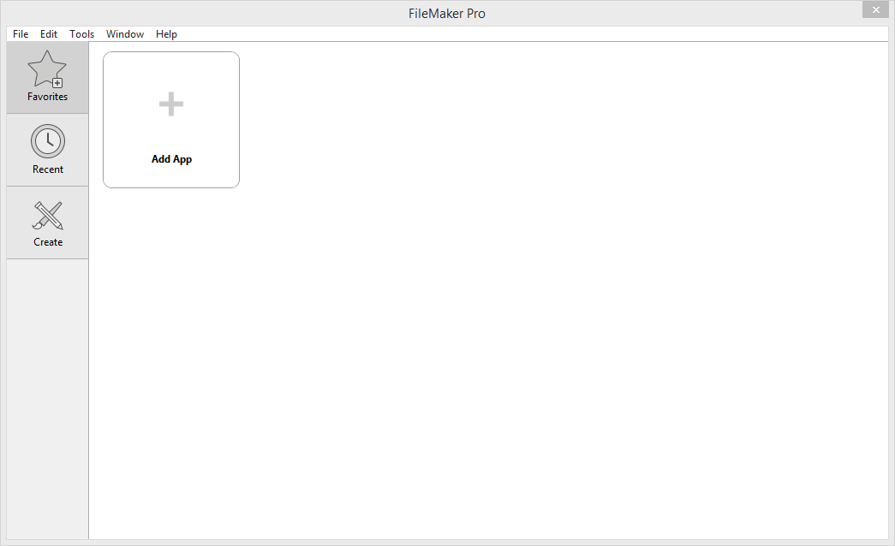
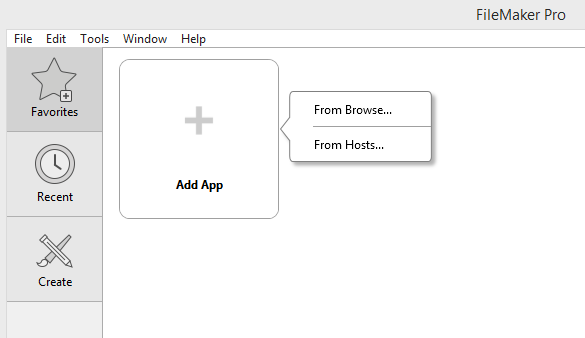
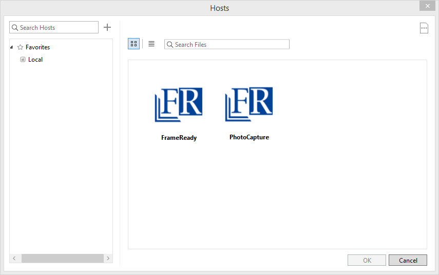
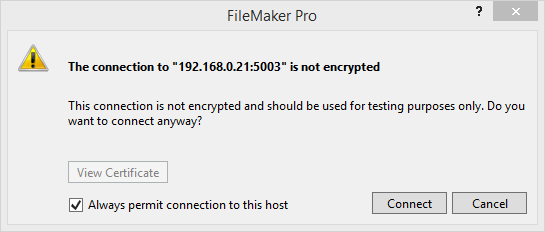
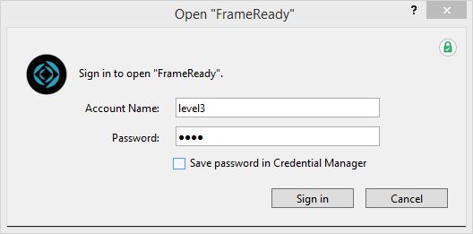
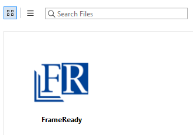
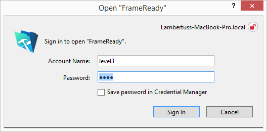
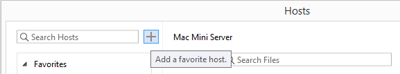
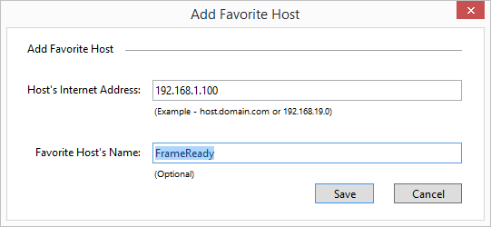

Open FrameReady on a Guest/Client Computer using FileMaker Server
Important: We strongly recommend a wired, Ethernet connection to ensure the fastest speeds. Wifi is generally good, but an Ethernet connection guarantees the best speed possible with the least amount of trouble or interference.
How to Open FrameReady using FileMaker Server
-
See also: Open on Mac (Single Computer), Open on Windows (Single Computer)
-
Jump down to How to Add a Favorite Host
Windows and Mac
-
If you have recently upgraded, make sure you are opening the correct version of FileMaker Pro!
Your computer may still have older versions installed. -
Open FileMaker Pro on the Guest (or client) computer. The FileMaker Launch Center appears.
Avoid using the Recent feature as those may reference old, unhosted files.

-
Click the Add App button and then choose From Hosts...
Or, in the menubar, click File > Hosts... > Show Hosts...
Because the host computer could have a different network address, avoid using the "Recent" tab.

-
Look for the name or IP address of the host computer on the left side of the screen and click on it.
Below on this page: How to Add a Favorite Host
If the host computer does not appear, then check your network and firewall settings. See: Firewalls

-
If you are prompted to verify the identity of the host, then put a check in the Always permit connection to this host field and click the Connect button.

-
If you are prompted to sign in to view the databases, then do so now.

-
A list of available files appears. Double-click FrameReady.

If you do not see a list of Hosts, then see: Network Troubleshooting Overview
-
Enter your assigned Account Name, e.g. level3, and Password and click the Sign In button.

How to Open FrameReady as a Guest with FileMaker Go
iPad and iPhone Only
-
On your iPad, search the App Store for FileMaker Go and install it the app.
If multiple versions exist, choose the newest/most recent version. -
When the install is complete, open the FileMaker Go app on your iPad.
-
In the lower right, tap the Hosts icon. Because the host computer could have a different network address, avoid relying on the Recent shortcut.
A list of available files appears.
If you do not see a list of Hosts, then see: Network Troubleshooting Overview
-
When the Host computer is located, a list of available files appears. Tap the FrameReady icon.
-
Enter your assigned Account Name and Password. Click OK.
The Main Menu opens.
How to Add a Favorite Host
-
Click the Add App button and choose From Hosts...
-
The Hosts window opens. Click the + button.

-
The Add Favorite Host window opens. Add the host computer's IP address and, optionally, give it a user friendly name.
Click the Save button. To remove a favorite from the list, right-click on it and choose Remove.

© 2023 Adatasol, Inc.